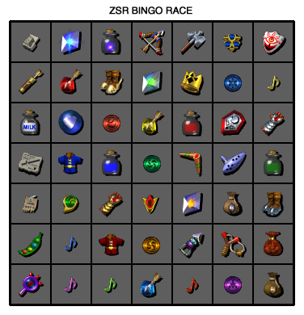

Ocarina of Time Bingo
About
This is a "Bingo" board for Ocarina of Time races.
To win, you must collect 5 consecutive items in a row, column, or diagonal which must include the given item.
The seed number is used to generate the given item.
Your item for this bingo is:
For OoT Bingo, there are some specific rules in place:
- In version 1, RBA is NOT ALLOWED.
- Banned Tricks for Bingo: "Using Deku Stick as Adult", "Get Item Manipulation (GIM)", "Using Bombchus Out of Bounds", "Obtaining the Eyeball Frog without presenting the Prescription", "Jumpslash Quick Putaway", "Stale Reference Manipulation (SRM)", and all forms of Arbitrary Code Execution.
- Item specific explanations:
"At least 1 skulltula from each dungeon": Only dungeons with blue warps are required.
"X Songs": Scarecrow's Song does not count.
"Frog's HP": You only need to get one of the frog's HPs.
"5 Zora Area HPs": Ice Cavern and Jabu Jabu does not count.
"X Deku Sticks / Deku Nuts / Beans": Item must display visually in inventory to count.
"X Boss Keys": Boss keys for child dungeons obtained through RBA count.
"X Hearts (No Duping)": Using RBA to write Heart Pieces into the inventory does not count as duping and is allowed. - If it says to have an item, you must actually keep it. For example, if it says to have "Blue Potion," you must not drink it, and you must still have it in your inventory at the time you finish getting all 5 objectives.
- When an item may be marked as completed:
Song: When the dialog box that says "You have learned the..." completes.
Item: When you are holding it above your head.
Beat Dungeon: When you step in the blue warp and lose control or skip the cutscene.
Beat a Boss/Enemy: When you strike the last blow.
If Wrong Warping, any items or goals associated with the wrong warp are obtained upon completion of the Wrong Warp. - For collection goals such as "8 hearts", "5 songs", "3 unused keys", etc, you are allowed to exceed the required amount.
- For "Plant 5 Beans" etc it is not allowed to plant multiple beans in the same location (e.g. by duping soft soil patches).
